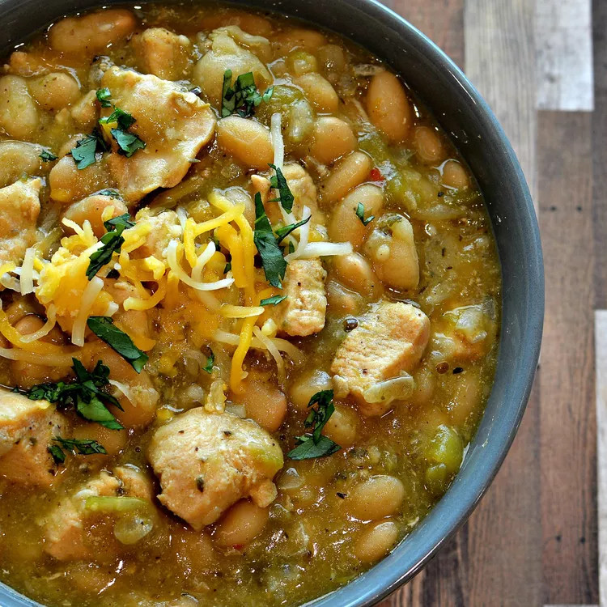

Chili

Description
Chorizo sausage and ground chicken mix it up with red bell peppers, black beans, white beans, fire-roasted diced
tomatoes, and beer.
Ingredients
- 1 tablespoon extra-virgin olive oil
- ¾ pound chorizo sausage, chopped
- 2 pounds ground chicken
- ¼ cup chili powder
- 1 ½ tablespoons ground cumin
- 1 onion, chopped
- 3 cloves garlic, finely chopped
- 1 red bell pepper, chopped
- 1 (15 ounce) can black beans, drained
- 1 (15 ounce) can white beans, drained
- 1 (12 fluid ounce) can or bottle beer
- 1 (28 ounce) can fire-roasted diced tomatoes, with juice
- 3 cups chicken stock
- 1 (6 ounce) can tomato paste
- salt to taste
Steps
- Heat olive oil in a Dutch oven or a large pot over medium-high heat; cook and stir chorizo in hot oil
until heated through, about 2 minutes. Remove chorizo using a slotted spoon to a bowl. Add chicken; cook
and stir until chicken is browned and crumbly, 5 to 6 minutes. Season with chili powder and cumin.
- Stir chorizo, onion, garlic, red bell pepper, black beans, and white beans into chicken; cook and stir
until onion begin to soften, 5 to 6 minutes. Pour beer into chili; bring to a simmer. Add tomatoes,
chicken stock, and tomato paste; simmer until heated through, about 5 minutes. Season with salt. Reduce
heat to low and simmer until flavors blend, about 30 minutes.